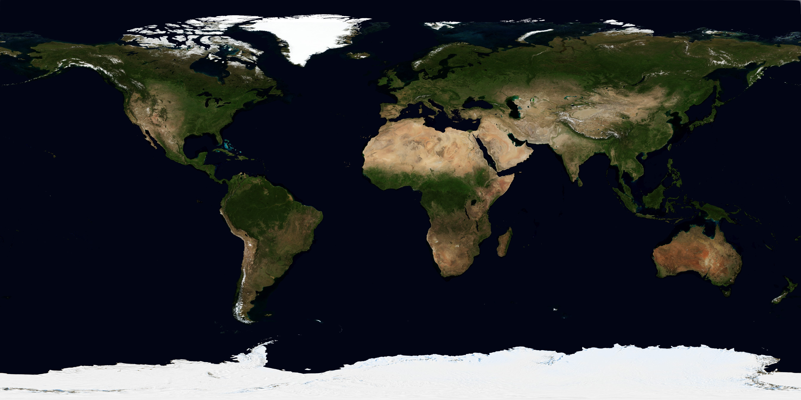

The line that moves
The boundary between day and night is called the terminator. Change the light to trace it across continents and oceans.
THE EARTH COLLECTION / 01
Ocean blue. Cloud white.
A thin edge of atmosphere.
Our home, turning in sunlight.
Find the place where day becomes night.
Gathering the world’s details…

The interactive Earth could not open. This surface map is still yours to explore.
Move the light. Watch the boundary travel.
Here, moving the light helps you explore. In space, Earth’s own turn carries places into day and night.
THREE THINGS TO NOTICE
The boundary between day and night is called the terminator. Change the light to trace it across continents and oceans.
Look at the sunlit rim. The blue glow suggests light scattered by the atmosphere. Its appearance here is an illustration.
Turn to the night side to find patterns of city lights. These historical maps show a composite world, not a live view.
Surface: NASA Blue Marble Next Generation, July 2004, with topography. Credit: NASA Earth Observatory; Reto Stöckli / NASA Goddard Space Flight Center. Clouds and night lights: Solar System Scope / INOVE, based on NASA imagery, CC BY 4.0.
Lighting, rotation speed, cloud drift and atmospheric scattering are illustrative. The cloud shell is exaggerated for visibility. This exhibit does not model changing weather, seasons, or the current position of Earth. The sunlight control changes illumination for comparison; it is not a time-of-day forecast.
Local files include the complete source record, image credits, Three.js’s MIT license, and the worked-reference notes.